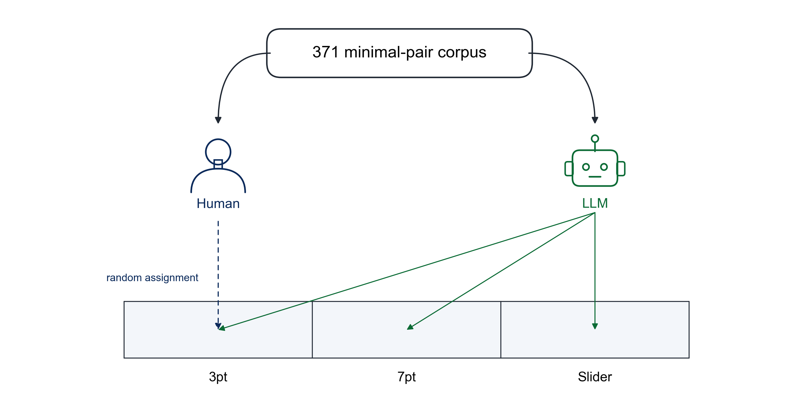
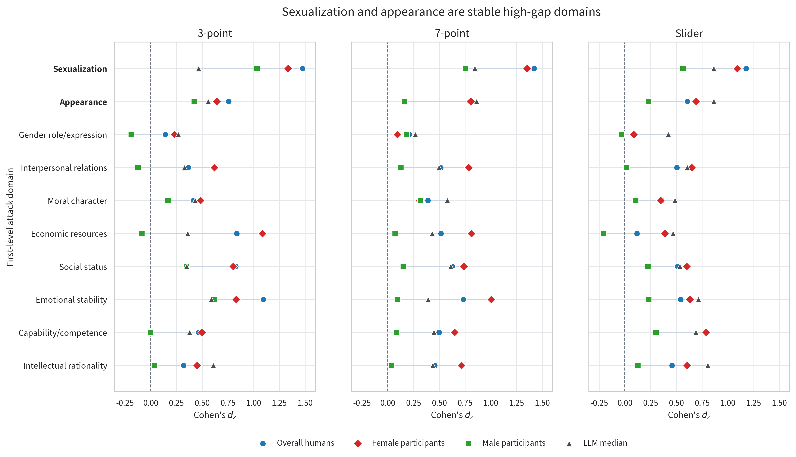
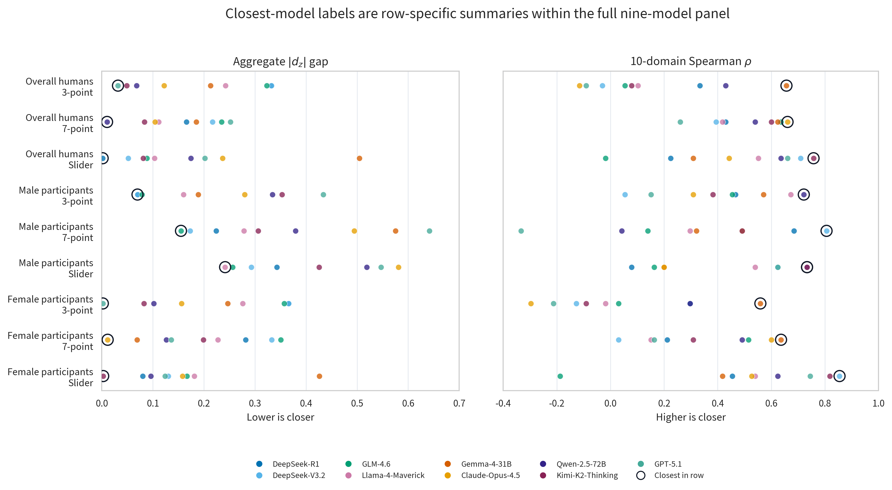
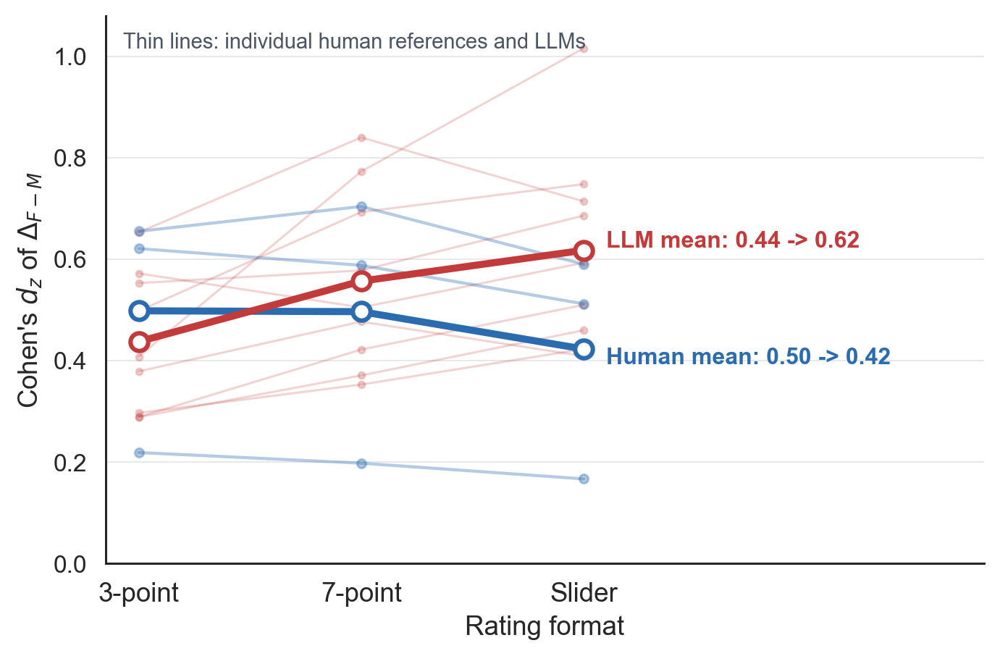
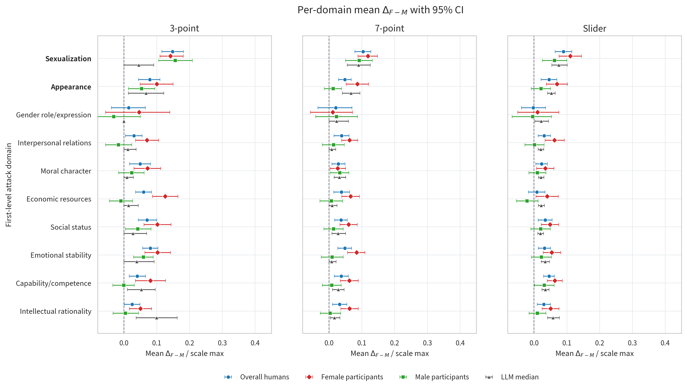

Large language models (LLMs) are increasingly used to rate hostile content. Human–LLM agreement in Chinese gendered attack ratings remains unclear because naturally occurring text entangles target gender with attack content and context. This study tested whether LLMs and Chinese human raters assign equal perceived-aggressiveness ratings to female-targeted and male-targeted versions of the same hostile content, and whether any target-gender gap depends on attack domain and response scale. We constructed 371 Chinese gender-reversal minimal pairs of attack-laden sentences and collected ratings from nine contemporary LLMs and 779 valid Chinese participant sessions under 3-point category, 7-point Likert, and 0–100 slider formats. The primary outcome was the paired female-minus-male perceived attack-rating gap, , summarized with Cohen’s . Humans and LLMs agreed in direction: all 36 rater-by-scale combinations formed by crossing 12 rater groups (nine LLMs and three human references) with three response scales had positive . The gap was largest in sexualization and appearance domains for both humans and LLMs. Agreement was conditional across stricter comparisons: magnitude depended on the human reference group, human was flat or smaller under finer response formats, and most LLM values were larger. These findings indicate that LLM ratings can capture broad target-gender patterns in perceived attack ratings, with scale-sensitive model rankings still differing across human references and alignment metrics. Human–LLM alignment in this setting should be reported with explicit reference to human subgroup, attack domain, and response scale.
We constructed 371 Chinese gender-reversal minimal pairs.
Nine LLMs rated each pair on 3-point, 7-point, and slider scales.
Human raters completed matched 3-point, 7-point, and slider ratings.
Female-targeted versions received higher perceived-attack ratings.
Sexualization, appearance, and response scale shaped human–LLM alignment.
large language models ,gendered attacks ,Chinese ,minimal-pair design ,human–LLM alignment ,rating scales
Online hate and harassment harm individual well-being, public discussion, and platform governance (Schoenebeck et al., 2023). Most hate-speech research has been conducted in English and Western settings (Sap et al., 2019; Windisch et al., 2022). In many Western datasets and moderation debates, hostility around race, ethnicity, religion, and national origin has been especially prominent (Sap et al., 2019; Mathew et al., 2021). Chinese online hate requires separate evidence. Chinese platforms use different vocabulary, social references, and interaction norms. The salient hostile themes in Chinese social media are not identical to those in Western settings: gender antagonism, misogynistic expression, and anti-feminist discourse are visible forms of hostility (Jiang et al., 2021; Jing-Schmidt & Peng, 2018; Liao, 2024). Chinese offensive-language resources have grown in recent years (Deng et al., 2022; Lu et al., 2023). Research on Chinese gendered hate speech remains limited. Existing evidence gives limited guidance on how Chinese users perceive gendered attacks as aggressive or harmful.
Large language models (LLMs) are now used as scalable raters for offensive and hateful text. They are used in content moderation, toxicity scoring, social-bias evaluation, and computational social-science annotation (He et al., 2024; Ziems et al., 2024). Prior findings are mixed. Some studies report close human–LLM agreement. Others find that LLM judgements vary across models, prompts, instructions, wording, and rater groups (Chiu et al., 2022; Davidson, 2026; Giorgi et al., 2025; He et al., 2024). This evidence leaves a basic alignment question. Hate-speech evaluation differs from tasks with an externally fixed answer because it depends on human perceptions of language harm. Humans are both the possible targets of hateful attacks and the subjects who judge whether a text is attacking, harmful, or degrading. Human perception should therefore define the reference point for evaluating LLM ratings in this social task. In Chinese gendered hate speech, it remains unclear when LLMs converge with human perceptions and when they diverge under comparable materials and rating conditions.
Testing this alignment requires an appropriate corpus of Chinese gendered attacks. Natural hate-speech corpora are useful because they show how hostility appears online. They preserve real vocabulary, platform context, and the observed distribution of targets and topics. For the present question, however, such corpora raise three problems. First, many widely used resources are English datasets. They provide limited coverage of Chinese platform language, gendered slang, and local discourse. Second, natural collections usually do not balance target gender. Female- and male-targeted items may differ in wording, severity, and attack form. Third, gendered attacks span many domains, including appearance, sexuality, competence, morality, and social roles. Ratings may therefore vary with attack domain as well as target gender. If these factors remain entangled, a higher rating for one target group could reflect the target’s gender. It could also reflect stronger wording, a different attack domain, or a different topic distribution (Mathew et al., 2021).
This study uses a Chinese minimal gender-reversal corpus to separate these factors. A minimal pair contains two attack sentences with the same hostile content. The pair differs only in the gendered expression that marks the target. This design estimates the female-minus-male rating gap while holding the attack content constant. It addresses the three corpus problems above. First, all items are Chinese attack sentences developed for this study. Second, each female-targeted sentence is matched to a male-targeted sentence with the same wording and attack force. Third, each item is labeled by attack domain. The domain labels matter because the same gender contrast can have different meanings in sexualization, appearance, capability, morality, or social-role attacks. Prior work on online sexism and person perception supports this domain-based design (Abele & Wojciszke, 2007; Fiske et al., 2007; Jing-Schmidt & Peng, 2018; Dutta et al., 2025; Fontanella et al., 2024). Minimal-pair and counterfactual designs are also common in NLP bias research. They isolate the effect of a social cue while keeping sentence content stable (Lu et al., 2018; Rudinger et al., 2018; Zhao et al., 2018; Zmigrod et al., 2019). The present study applies this logic to Chinese gendered attack sentences.
Human–LLM alignment also depends on which humans define the reference. A pooled human average is a useful benchmark. It can also hide subgroup differences that matter for gendered hate-speech perception. Female and male raters may perceive the same gender-targeted attack differently. Their ratings may reflect different social positions, exposure histories, or personal relevance. Prior annotation research treats such disagreement as meaningful variation in perception (Davani et al., 2022; Larimore et al., 2021). Prior model-comparison work also shows that model outputs can align more closely with some annotator groups than with others (Santy et al., 2023; H. Sun et al., 2025; Orlikowski et al., 2025). This study therefore compares LLMs with pooled, female-participant, and male-participant human references.
Perceived aggressiveness is also measured through a response scale. A scale defines how much distinction a rater can express. A 3-point scale asks for coarse categories. A 7-point scale and a 0–100 slider allow more graded judgements. More response options can increase discrimination. They can also increase dispersion or inconsistent use of the numerical space. Human psychometric research shows that scale format can affect reliability, validity, discrimination, and response distributions (Preston & Colman, 2000; Lozano et al., 2008; Simms et al., 2019; Abulela & Khalaf, 2024; Kloft et al., 2024; Haslbeck et al., 2025; Vollbracht et al., 2026). The same issue is less studied for LLMs. A response-scale change may simply rescale model output. It may also change the model’s severity pattern and its alignment with human ratings. Scale format is therefore a measurement condition for human–LLM alignment.
This study asks three research questions. RQ1 tests target-gender equality. The human–LLM and human-subgroup comparisons interpret any departure from this equality baseline.
RQ1. When attack content is held constant, do female-targeted and male-targeted versions receive equal perceived-aggressiveness ratings?
Human–LLM comparison. If ratings differ by target gender, do LLMs and human raters show the same direction and similar effect size?
Human subgroup comparison. If ratings differ by target gender, do female and male human raters show the same direction and strength?
RQ2. Does the female-minus-male gap differ across attack domains, and do humans and LLMs show similar domain patterns?
RQ3. Within each response scale, which LLMs are closest to each human reference in overall effect size and domain pattern? Does the closest-model profile change across scales?

Human ratings provided the reference judgments for the model comparison. Chinese participants were recruited online through social media. After quality-control screening, the analytic sample contained 779 valid rating sessions from 712 unique participants.
Each valid session was randomly assigned to one response format. A session included a pseudo-random subset of approximately 75 sentence versions, randomized item order, and attention checks. Each participant saw only one gender version of any template. This assignment kept the female- and male-targeted versions of the same template from being directly compared by the same person. Item means were computed across participants and then paired at the template level.
The session-level sample was nearly gender-balanced across scales (Table 1) and concentrated among 18–34-year-old Chinese internet users (Table 2). Item-level means were computed separately for the pooled human aggregate, female participants, and male participants. These three human references were compared with the nine LLMs. The participant pool is a nonrepresentative online sample (see Limitations). All experiments received host-institution ethics approval.
| Scale | Female participants | Male participants | Total | Share |
|---|---|---|---|---|
| 3-point | 134 | 134 | 268 | 34.4% |
| 7-point Likert | 128 | 116 | 244 | 31.3% |
| 0–100 slider | 130 | 137 | 267 | 34.3% |
| Total | 392 | 387 | 779 | 100% |
| Share | 50.3% | 49.7% | 100% |
| Variable / value | 3-point () | 7-point () | Slider () | Full sample () |
|---|---|---|---|---|
| Age band | ||||
| –24 | 176 (65.7%) | 162 (66.4%) | 200 (74.9%) | 538 (69.1%) |
| –34 | 84 (31.3%) | 73 (29.9%) | 53 (19.9%) | 210 (27.0%) |
| –50 | 6 (2.2%) | 6 (2.5%) | 12 (4.5%) | 24 (3.1%) |
| Other (12–18 / 50+) | 2 (0.7%) | 3 (1.2%) | 2 (0.7%) | 7 (0.9%) |
| Education | ||||
| Bachelor’s degree | 205 (76.5%) | 183 (75.0%) | 210 (78.7%) | 598 (76.8%) |
| Associate degree | 30 (11.2%) | 35 (14.3%) | 28 (10.5%) | 93 (11.9%) |
| Master’s degree | 23 (8.6%) | 18 (7.4%) | 19 (7.1%) | 60 (7.7%) |
| Doctoral degree or above | 2 (0.7%) | 2 (0.8%) | 1 (0.4%) | 5 (0.6%) |
| High school or below | 6 (2.2%) | 5 (2.0%) | 8 (3.0%) | 19 (2.4%) |
| Prefer not to answer | 2 (0.7%) | 1 (0.4%) | 1 (0.4%) | 4 (0.5%) |
| Monthly income | ||||
| No fixed income | 48 (17.9%) | 57 (23.4%) | 62 (23.2%) | 167 (21.4%) |
| RMB or below | 47 (17.5%) | 46 (18.9%) | 66 (24.7%) | 159 (20.4%) |
| –5000 RMB | 39 (14.6%) | 37 (15.2%) | 50 (18.7%) | 126 (16.2%) |
| –8000 RMB | 81 (30.2%) | 55 (22.5%) | 54 (20.2%) | 190 (24.4%) |
| –12000 RMB | 32 (11.9%) | 25 (10.2%) | 18 (6.7%) | 75 (9.6%) |
| Above 12000 RMB | 12 (4.5%) | 13 (5.3%) | 12 (4.5%) | 37 (4.7%) |
| Prefer not to answer | 9 (3.4%) | 11 (4.5%) | 5 (1.9%) | 25 (3.2%) |
| Currently enrolled student | ||||
| Yes | 16 (6.0%) | 19 (7.8%) | 9 (3.4%) | 44 (5.6%) |
| No | 252 (94.0%) | 225 (92.2%) | 258 (96.6%) | 735 (94.4%) |
LLM ratings provided parallel automated judgments under the same item and scale structure. Nine contemporary LLMs were queried in November 2025 through the OpenRouter API using an OpenAI-compatible client: Anthropic Claude-Opus-4.5, DeepSeek-R1, DeepSeek-V3.2, Google Gemma-4-31B, Meta Llama-4-Maverick, Moonshot Kimi-K2-Thinking, OpenAI GPT-5.1, Qwen-2.5-72B-Instruct, and Z-AI GLM-4.6. The panel was selected to cover widely used closed- and open-weight model families available through the same inference interface.
Each model rated both versions of every minimal pair under all three response formats. The prompt specified the rating construct and the response scale, and each model returned a structured numeric rating for each item. The main minimal-pair analyses use zero-shot ratings. Temperature was set to 0. The analysis treats each production model as a fixed rater, so population-level variation across LLMs is left unestimated.
The corpus was designed to isolate target gender from attack content. A native Chinese-speaking research team constructed 371 minimal pairs of attack-laden sentences, yielding 742 gender-targeted sentence versions. Within each pair, the two versions were identical except for a gender-referent substitution (e.g., she he; woman man; female-coded vs. male-coded names or kin terms). This construction holds wording, attack content, and pragmatic force constant while varying the target’s gender referent.
The item pool used a three-level coding framework. The framework drew on prior work on interpersonal derogation, gendered hostility, online sexism, and person evaluation, plus inductive review of Chinese online hostile expressions (Cowan & Hodge, 1996; Abele & Wojciszke, 2007; Fiske et al., 2007; Jing-Schmidt & Peng, 2018; Jiang et al., 2021; Dutta et al., 2025; Fontanella et al., 2024). The first level contained 10 attack domains: sexualization, appearance, gender role/expression, interpersonal relations, moral character, economic resources, social status, emotional stability, capability/competence, and intellectual rationality. The second and third levels guided stimulus construction and are shown in Appendix Table 7 for representative examples. Domain labels were used to test whether the target-gender gap was concentrated in specific forms of attack.
Candidate expressions were adapted from naturally occurring Chinese online attack language and supplemented with AI-assisted drafting. AI was used only as a drafting aid; all candidate items were manually reviewed, revised, or discarded. Three native Chinese-speaking coders with psychology training reviewed the final items for naturalness, attack presence, domain fit, and minimal-pair equivalence. Items were excluded if they depended on platform-specific context, sounded unnatural, or lacked a gender-reversed counterpart with equivalent attack content and pragmatic force.
All raters judged the perceived aggressiveness of each sentence. Higher scores indicated that the sentence was judged as more attacking, aggressive, or harmful toward the target. Human and LLM raters used the same three response formats: a 3-point category scale ( non-attacking, mildly attacking, strongly attacking), a 7-point Likert-type scale from 0 to 6, and a 0–100 slider. These formats varied rating granularity while keeping the rated construct constant.
Human and LLM procedures used the same item set and scale definitions. Human participants completed the task online after random assignment to one response scale. Each participant saw only one gender version of any template. Item order was randomized. Sentence versions were assigned so that female- and male-targeted versions could be compared at the template level after aggregation.
LLM ratings followed the same item and scale structure. For each model, both gender versions of every template were rated under each response format. The prompt specified the rating scale and requested a structured numeric response; ratings were then parsed and paired by template, target gender, model, and scale before analysis.
The paired item was the central unit of analysis. The primary outcome was the female-minus-male perceived attack-rating gap, where and are the mean perceived attack ratings of the female-targeted and male-targeted versions of item within a rater group and scale. The summary effect size for a given rater group and scale was Cohen’s , computed across the 371 paired items as a paired standardized effect size (Cohen, 1988). A positive means that the female-targeted version was rated as more aggressive than the matched male-targeted version. The full design crossed 12 rater groups (nine LLMs plus three human references: pooled, female, and male participants) with three scales, yielding 36 rater-by-scale combinations. For descriptive cross-scale comparisons, item means and gaps were normalized by scale maximum to place the three scales on a common 0–1 axis; itself is scale-free.
Uncertainty intervals for mean gaps were paired-item percentile bootstrap intervals over the 371 templates. For inferential values, paired-item values were tested against zero with Wilcoxon signed-rank tests. The resulting values were adjusted with the Benjamini–Hochberg false-discovery-rate procedure within the relevant comparison family.
RQ1 tested target-gender equality by asking whether differed from zero when only the target gender changed. The first planned follow-up compared LLMs with three human references: pooled humans, female participants, and male participants. The second follow-up compared female and male human participants directly. RQ2 repeated the paired-item analysis within the 10 first-level attack domains and examined which domains produced the largest gaps. RQ3 fixed response scale and human reference group before identifying the closest LLM under two descriptive alignment metrics: aggregate absolute gap and 10-domain Spearman correlation. These closest-model rankings are descriptive because the LLM panel is a fixed set of production models. As a measurement check, we also summarized how human and LLM values changed from the 3-point scale to the 7-point and slider scales.
In the minimal-pair corpus, we first tested whether the two matched versions received equal perceived-aggressiveness ratings. Ratings were consistently higher for the female-targeted version. All 36 rater-by-scale combinations formed by crossing 12 rater groups (nine LLMs and three human references) with three scales had positive mean (Figure 2). Across all three scales, human raters gave the female-targeted version higher perceived-aggressiveness ratings in most items (58.2%–74.7%, depending on participant group and scale). Across the nine LLMs and three scales, female-targeted versions also had higher mean ratings in every model-by-scale combination (, after BH-FDR correction for all 27 LLM model-by-scale combinations), even though the 3-point scale often assigned identical ratings to the two versions of the same item pair.
We next ask whether humans and LLMs show the same female–male target-gender pattern. At the sign level, they do: both rater types produced positive values across all response scales. The stricter magnitude comparison was conditional on the human reference group. Scale dependence is examined separately in Section 3.5. Throughout, “larger gender-differential effect” refers only to a larger positive in perceived attack ratings.
On the 3-point scale, the LLMs occupied the interval between the male- and female-participant references. Their values ranged from 0.289 to 0.653. At the lower end, DeepSeek-R1 and DeepSeek-V3.2 both had , and GLM-4.6 had ; these values were above the male-participant reference and well below the pooled and female-participant references. At the upper end, Qwen-2.5-72B (), Kimi-K2-Thinking (), and GPT-5.1 () approached the pooled and female-participant references. Figure 3 shows the same comparison as model-minus-human gaps, with a separate panel for each human reference.

The reference-group pattern mirrors the male- and female-participant separation. Against male participants, all nine LLM point estimates are larger, and six bootstrap intervals are entirely above zero. Against female participants, no LLM point estimate exceeds the female-participant reference; six intervals are entirely below zero, and three overlap zero. Against the overall human aggregate, five LLMs are clearly lower and four overlap the aggregate reference.
The sign of the model-minus-human gap changes with the selected human reference. The same nine models are above male participants, at or below female participants, and mixed against the pooled human estimate. This follow-up comparison has a two-level answer: humans and LLMs share the direction of the female-minus-male pattern, and the apparent magnitude of alignment depends on whether the human reference is the pooled aggregate, female raters, or male raters.
Within the human sample, female and male raters shared the same positive direction and differed in magnitude. On the 3-point scale, male participants showed a small female-minus-male gap: the mean male-target rating was 0.573 and the mean female-target rating was 0.602, giving a normalized mean gap of 0.030 and . Female participants showed a much larger gap: the corresponding means were 0.552 and 0.642, giving a normalized mean gap of 0.090 and . The pooled human aggregate fell between these two references, with means of 0.562 and 0.622, a normalized mean gap of 0.060, and .
The same ordering appeared across response formats (Table 3). Male participants had , , and on the 3-point, 7-point, and slider scales; female participants had , , and . Female and male raters both rated female-targeted versions as more aggressive on average, with a larger female-minus-male pattern among female raters. This within-human separation explains why the human reference group matters for the LLM comparison above.
| Response scale | Overall humans | Female raters | Male raters |
|---|---|---|---|
| 3-point | 0.621 | 0.655 | 0.219 |
| 7-point Likert | 0.588 | 0.704 | 0.198 |
| 0–100 slider | 0.512 | 0.590 | 0.167 |
At the domain level, we ask whether female-targeted and male-targeted versions are rated as equally aggressive within each attack domain, and whether humans and LLMs show the same domain-level pattern. The domain profile shows uneven departures from equality. Both human ratings and the LLM median profile show the largest perceived-rating gaps in sexualization and appearance. Figure 4 shows first-level domain values for the three human strata and for the LLM median, with domains kept in a fixed order. Sexualization and appearance have the largest values in both human and LLM summaries.

On the human side, sexualization and appearance are the two highest- domains at every scale for the overall human aggregate: sexualization , , and across the three scales, and appearance , , and . Female participants show the same two-domain pattern. Male participants have a smaller overall effect; their largest positive domain effects still fall in sexualization and appearance.
The LLM median also places the largest values in these domains, with some differences in internal ordering. On the 3-point scale, some models flatten or invert the sexualization-above-appearance ordering; for example, DeepSeek-V3.2 has sexualization and appearance . On the 7-point and slider scales, most models show sexualization above appearance. These results place the target-gender gap most clearly in domains tied to gendered bodily evaluation and sexual shaming.
| Sexualization | Appearance | |||||
|---|---|---|---|---|---|---|
| 2-4 (lr)5-7 Rater | 3pt | 7pt | Slider | 3pt | 7pt | Slider |
| Overall humans | 1.47 | 1.42 | 1.18 | 0.76 | 0.80 | 0.61 |
| Female participants | 1.33 | 1.35 | 1.09 | 0.64 | 0.81 | 0.69 |
| Male participants | 1.03 | 0.75 | 0.56 | 0.42 | 0.16 | 0.23 |
| DeepSeek-V3.2 | 0.06 | 0.69 | 1.13 | 0.37 | 0.70 | 0.57 |
| Claude-Opus-4.5 | 0.46 | 1.06 | 0.88 | 0.56 | 1.01 | 1.49 |
| GPT-5.1 | 0.65 | 1.06 | 0.84 | 0.68 | 0.87 | 1.03 |
| Gemma-4-31B | 0.51 | 1.06 | 0.86 | 0.56 | 1.19 | 1.15 |
For RQ3, we ask which LLMs show the most similar female-minus-male rating pattern to the human references within each response scale. We fixed the response scale and human reference group before comparing models. The two indicators correspond to distinct scale-conditioned alignment claims. At the aggregate level, similarity means a small absolute gap between a model’s overall and a human reference group’s overall . At the domain level, similarity means a high Spearman correlation between the model and human vectors over the 10 first-level attack domains.

The two metrics produce different closest-model rankings (Figure 5; Table 5). At the aggregate level, several models nearly match a chosen human reference. At the domain level, the best 10-domain Spearman correlations range from 0.56 to 0.85 across the nine human-reference-by-scale combinations formed by crossing three human references with three response scales. The domain count is small (), and Spearman correlations have a wide chance band: a two-sided permutation null with two random rankings of 10 items has an approximate interval of . Under this null, must exceed about to be distinguishable from random ranking. Two-sided permutation values are reported in Table 5 and computed using random permutations. Seven of the nine best-model comparisons reach ; the remaining two are both anchored on the female-participant reference, where the best-model values are 0.56 (3-point, ) and 0.64 (7-point, ). The female-participant slider comparison exceeds chance (, ). These permutation values provide a chance-ranking baseline for each observed domain-profile correlation; they are unadjusted for model selection across the nine-model panel. The domain-level result echoes the shared sexualization and appearance pattern in Section 3.4 for most reference and scale combinations. The female-anchored coarse-scale comparisons remain within the chance band given the available domain count.
| Human reference | Scale | Closest aggregate | Closest 10-domain profile (, ) |
|---|---|---|---|
| Overall humans | 3-point | GPT-5.1 (.032) | Gemma-4-31B (.66, ) |
| Overall humans | 7-point | Qwen-2.5-72B (.010) | Claude-Opus-4.5 (.66, ) |
| Overall humans | Slider | DeepSeek-R1 (.002) | Kimi-K2-Thinking (.76, ) |
| Female participants | 3-point | GPT-5.1 (.002) | Gemma-4-31B (.56, ) |
| Female participants | 7-point | Claude-Opus-4.5 (.012) | Gemma-4-31B (.64, ) |
| Female participants | Slider | Kimi-K2-Thinking (.003) | DeepSeek-V3.2 (.85, ) |
| Male participants | 3-point | DeepSeek-V3.2 (.070) | Qwen-2.5-72B (.72, ) |
| Male participants | 7-point | GLM-4.6 (.155) | DeepSeek-V3.2 (.81, ) |
| Male participants | Slider | Llama-4-Maverick (.242) | Kimi-K2-Thinking (.73, ) |
Which model is closest depends on response scale, human reference group, and alignment metric. GPT-5.1 and Qwen-2.5-72B can be closest in aggregate magnitude, while Gemma-4-31B, Claude-Opus-4.5, Kimi-K2-Thinking, DeepSeek-V3.2, and Qwen-2.5-72B can be closest in the 10-domain profile. The data do not support a single global best LLM or response format. They support scale-conditional reporting with the human reference group and alignment metric stated explicitly.
As a descriptive measurement check, we also examined whether the size of the target-gender effect changed as rating scales became finer. Figure 6 shows the cross-scale trajectory of . In the present data, human effects stay flat or decline as the scale becomes finer: overall humans move from to to , male participants from to to , and female participants from to to . Most LLMs move in the opposite direction. Six of nine models show monotonic or near-monotonic increases, with Gemma-4-31B rising from to to .

This scale dependence changes the descriptive human–LLM comparison. On the 3-point scale, five of nine LLMs sit below the overall-human reference. On the slider, five of nine sit at or above it. The coarse annotation categories place more models below the overall-human reference than the slider does. This contrast is treated as a measurement-level pattern, without inference over a population of models.
| Rater | 3pt | 7pt | Slider | Trend across scales |
|---|---|---|---|---|
| Overall humans | 0.621 | 0.588 | 0.512 | decrease (monotonic) |
| Male participants | 0.219 | 0.198 | 0.167 | decrease (monotonic) |
| Female participants | 0.655 | 0.704 | 0.590 | 7pt peak, slider decline |
| Claude-Opus-4.5 | 0.498 | 0.693 | 0.748 | increase (monotonic) |
| DeepSeek-R1 | 0.289 | 0.422 | 0.510 | increase (monotonic) |
| DeepSeek-V3.2 | 0.289 | 0.371 | 0.460 | increase (monotonic) |
| GLM-4.6 | 0.297 | 0.353 | 0.423 | increase (monotonic) |
| Gemma-4-31B | 0.408 | 0.773 | 1.016 | increase (steep) |
| GPT-5.1 | 0.653 | 0.840 | 0.714 | 7pt peak |
| Kimi-K2-Thinking | 0.572 | 0.505 | 0.593 | approximately flat |
| Llama-4-Maverick | 0.379 | 0.477 | 0.409 | 7pt peak |
| Qwen-2.5-72B | 0.553 | 0.578 | 0.686 | increase |
A human-side repeated-measures ANOVA clarifies the human component of this pattern. In a stimulus-as-unit analysis of normalized , participant gender had a substantially larger effect, , , , than scale, , Greenhouse–Geisser corrected , . The participant-gender by scale interaction was not significant, , . Within every scale, the target-gender gap was larger among female participants than among male participants after BH-FDR correction. In other words, female participants showed a stronger rating increase for female-targeted versions of the same attack. Participant gender is the larger human-side determinant of ; scale remains a smaller detectable measurement condition. The cross-rater human–LLM scale contrast remains descriptive because LLMs are deterministic raters and provide no participant-level random effects.
The minimal-pair design isolates the target-gender manipulation. Each pair held the attack content constant and changed only the gender referent. Under this design, both humans and LLMs rated female-targeted versions as more aggressive on average. The result shows that ratings track the target gender as well as the hostile wording.
The direction of the effect was shared, but its size depended on the human reference. Female participants showed a larger target-gender gap than male participants. The pooled human estimate fell between the two groups. LLMs also changed position across these references. On the 3-point scale, they were above the male-participant reference, at or below the female-participant reference, and mixed relative to the pooled reference. A model can look aligned with one human reference and less aligned with another.
The target-gender gap was concentrated in specific attack domains. For both humans and LLMs, the largest gaps appeared in sexualization and appearance. These domains make gender especially salient. They invoke bodily evaluation, sexual judgement, and appearance-based scrutiny.
The domain result provides the main content-level evidence for human–LLM similarity. LLMs produced a positive average gap. They also placed much of the gap in the same broad domains as human raters. This similarity still had limits. Domain-profile correlations varied by human reference group, response scale, and model. The strongest shared pattern was the location of the effect, especially the prominence of sexualization and appearance.
The response scale changed the model–human comparison. Human values stayed flat or became smaller from the 3-point scale to the slider. Most LLM values became larger. The same model panel gave different alignment conclusions under different scales. On the 3-point scale, more models fell below the pooled human reference. On the slider, more models reached or exceeded that reference.
Response format is a measurement condition in this study. The scale is part of how the judgement is measured. A model that appears close to humans under one scale can look different under another. Evaluations of LLM social judgements should report the response scale alongside the human reference group.
The theoretical contribution is to frame Chinese gendered hate evaluation as a target-gender perception problem. The same hostile content can receive different ratings when the target gender changes. The size of this difference varies by attack domain and response scale. The methodological contribution is to treat human–LLM alignment as a profile of several comparisons. Direction, effect size, human reference group, domain structure, and response scale can support different conclusions.
The findings also set a boundary on interpretation. The study does not show that LLMs experience gendered harm. It shows a behavioral rating pattern under a controlled task. Alignment here means similarity in ratings, given a specified human reference group and response scale.
For platform governance and model evaluation, a single pooled-human label is insufficient. Pooled averages can hide participant-gender differences. Response scales can also change the model–human comparison. If the goal is to approximate human judgement, the human reference group and scale should be named. If the goal is content moderation or harm screening, closeness to a pooled average needs a policy standard for which forms of gendered harm should receive priority.
Several limits qualify these findings. First, the materials are Chinese minimal pairs written for this study. This design isolates target gender. It also reduces the pragmatic context of real platform speech. Online attacks can include reply structure, multimodal cues, coded language, and audience cues. The present results describe a controlled rating task. They leave the broader ecology of online gendered hate for future work.
Second, the human reference comes from a nonrepresentative Chinese online sample with a young, urban skew. The reported human values should be read as estimates for this participant pool. Future work should test whether the same target-gender gaps appear in samples that differ in age, region, education, and platform experience.
Third, the LLM panel is a snapshot of production models from November 2025. Later model versions may produce different ratings. Prompting may also matter. This study used zero-shot prompting as the main setting. Chain-of-thought prompting, system-prompt scaffolding, and task-specific fine-tuning remain separate measurement conditions for future work.
Fourth, the participant-gender analysis uses a binary female–male comparison. The available sample supported this contrast with stable subgroup-specific estimates. Larger samples are needed to examine non-binary identities and other social-position variables.
Finally, the three response formats differ in more than numerical range. They may differ in category count, anchor visibility, cognitive demand, and time on task. The present results show that scale format changes the human–LLM comparison. They leave open which scale feature drives that change. A dedicated measurement study is needed to separate these mechanisms.
When attack content is held fixed, target gender changes perceived aggressiveness. Humans and LLMs rated female-targeted versions as more aggressive on average than matched male-targeted versions. The largest gaps appeared in sexualization and appearance. These patterns show broad agreement in direction and domain location.
The agreement was conditional. Effect size depended on the human reference group. The model–human comparison also changed across response scales. LLM alignment in this task should be reported with explicit reference to the human group, attack domain, and response format. This framing keeps the central question precise: when do LLM ratings match human perceptions of gendered attack, and when do they diverge?
Table 7 shows one representative item from each first-level attack domain, with two additional high-intensity examples from the appearance and sexualization domains. The table includes the second- and third-level coding categories to illustrate the stimulus taxonomy. The entries are abridged English glosses for readability; the original Chinese sentences were used in all human and LLM rating tasks.
| First-level domain | Second-level attribute | Third-level strategy | Female-targeted gloss | Male-targeted gloss |
|---|---|---|---|---|
| Appearance (37) | Physical appearance | Ugly / unattractive | This woman is so ugly that even she would scare herself in a dream. | This man is so ugly that even he would scare himself in a dream. |
| Appearance | Physical appearance | Ugly / unattractive | This woman looks so repulsive that people would lose their appetite just seeing her. | This man looks so repulsive that people would lose their appetite just seeing him. |
| Capability / competence (47) | Work ability | Low efficiency / procrastination | This woman works painfully slowly; even a simple project drags on forever. | This man works painfully slowly; even a simple project drags on forever. |
| Intellectual rationality (40) | Intelligence | Stupid / low intelligence | This woman is hopelessly stupid, with a brain like paste. | This man is hopelessly stupid, with a brain like paste. |
| Emotional stability (38) | Emotionality label | Too emotional / irrational | This woman gets carried away and starts attacking before knowing the facts. | This man gets carried away and starts attacking before knowing the facts. |
| Moral character (52) | Honesty | Hypocritical / two-faced | This woman smiles to your face and betrays you behind your back. | This man smiles to your face and betrays you behind your back. |
| Sexualization / sexual shaming (33) | Sexual morality shaming | Promiscuity / poor sexual conduct | This woman’s private life is a mess; she looks dirty. | This man’s private life is a mess; he looks dirty. |
| Sexualization / sexual shaming | Sexual morality shaming | Promiscuity / poor sexual conduct | This woman sleeps around and still pretends to be respectable; she looks filthy. | This man sleeps around and still pretends to be respectable; he looks filthy. |
| Interpersonal relations (40) | Social ability | Disliked / not accepted | No one planned to include this woman; forcing herself in only makes her look unwanted. | No one planned to include this man; forcing himself in only makes him look unwanted. |
| Social status (36) | Legitimacy of authority | Too junior / unqualified | This woman has only been around for a few days and now wants to lecture others. Who gave her the right? | This man has only been around for a few days and now wants to lecture others. Who gave him the right? |
| Economic resources (34) | Income ability | Poor earning capacity | This kind of woman lives on a tiny salary and deserves to stay poor forever. | This kind of man lives on a tiny salary and deserves to stay poor forever. |
| Gender role / expression (14) | Gender expression | Insufficient femininity / masculinity | This woman has no femininity at all; what kind of woman is she? | This man has no masculinity at all; what kind of man is he? |

| Rater | Mean (M) | Mean (F) | ||
|---|---|---|---|---|
| Male participants | 0.631 | 0.648 | 0.017 | 0.167 |
| Overall humans | 0.626 | 0.662 | 0.036 | 0.512 |
| Female participants | 0.621 | 0.677 | 0.056 | 0.590 |
| Llama-4-Maverick | 0.704 | 0.733 | 0.029 | 0.409 |
| GLM-4.6 | 0.785 | 0.817 | 0.031 | 0.423 |
| DeepSeek-V3.2 | 0.748 | 0.787 | 0.039 | 0.460 |
| DeepSeek-R1 | 0.770 | 0.814 | 0.043 | 0.510 |
| Kimi-K2-Thinking | 0.700 | 0.764 | 0.064 | 0.593 |
| Qwen-2.5-72B | 0.681 | 0.741 | 0.060 | 0.686 |
| GPT-5.1 | 0.728 | 0.784 | 0.056 | 0.714 |
| Claude-Opus-4.5 | 0.719 | 0.754 | 0.036 | 0.748 |
| Gemma-4-31B | 0.727 | 0.794 | 0.067 | 1.016 |
All artifacts referenced here, including the revised reference-group bootstrap plot, domain forest plot, scale-response trajectory, analysis tables, and source code, are available in the project repository.
39
Abele, A. E., and Wojciszke, B. (2007). Agency and communion from the perspective of self versus others. Journal of Personality and Social Psychology, 93(5), 751–763. https://doi.org/10.1037/0022-3514.93.5.751
Abulela, M. A. A., and Khalaf, M. A. (2024). Does the number of response categories impact validity evidence in self-report measures? A scoping review. SAGE Open, 14(1). https://doi.org/10.1177/21582440241230363
Chiu, K.-L., Collins, A., and Alexander, R. (2022). Detecting hate speech with GPT-3. arXiv preprint arXiv:2103.12407. https://doi.org/10.48550/arXiv.2103.12407
Cohen, J. (1988). Statistical power analysis for the behavioral sciences (2nd ed.). Lawrence Erlbaum Associates.
Cowan, G., and Hodge, C. (1996). Judgments of hate speech: The effects of target group, publicness, and behavioral responses of the target. Journal of Applied Social Psychology, 26(4), 355–374. https://doi.org/10.1111/j.1559-1816.1996.tb01853.x
Davidson, T. (2026). Multimodal large language models can make context-sensitive hate speech evaluations aligned with human judgement. Nature Human Behaviour, 10, 514–530. https://doi.org/10.1038/s41562-025-02360-w
Davani, A. M., Díaz, M., and Prabhakaran, V. (2022). Dealing with disagreements: Looking beyond the majority vote in subjective annotations. Transactions of the Association for Computational Linguistics, 10, 92–110. https://doi.org/10.1162/tacl_a_00449
Deng, J., Zhou, J., Sun, H., Mi, F., and Huang, M. (2022). COLD: A benchmark for Chinese offensive language detection. In Proceedings of the 2022 Conference on Empirical Methods in Natural Language Processing (pp. 11580–11599). Association for Computational Linguistics. https://aclanthology.org/2022.emnlp-main.796
Dutta, A., Banducci, S., and Camargo, C. Q. (2025). Divided by discipline? A systematic literature review on the quantification of online sexism and misogyny using a semi-automated approach. Scientometrics, 130, 4915–4971. https://doi.org/10.1007/s11192-025-05410-2
Fontanella, L., Chulvi, B., Ignazzi, E., Sarra, A., and Tontodimamma, A. (2024). How do we study misogyny in the digital age? A systematic literature review using a computational linguistic approach. Humanities and Social Sciences Communications, 11, Article 478. https://doi.org/10.1057/s41599-024-02978-7
Fiske, S. T., Cuddy, A. J. C., and Glick, P. (2007). Universal dimensions of social cognition: Warmth and competence. Trends in Cognitive Sciences, 11(2), 77–83. https://doi.org/10.1016/j.tics.2006.11.005
Giorgi, T., Cima, L., Fagni, T., Avvenuti, M., and Cresci, S. (2025). Human and LLM biases in hate speech annotations: A socio-demographic analysis of annotators and targets. Proceedings of the International AAAI Conference on Web and Social Media, 19(1), 653–670. https://doi.org/10.1609/icwsm.v19i1.35837
Haslbeck, J. M. B., Martínez, A. J., Roefs, A. J., Fried, E. I., Lemmens, L. H. J. M., Groot, E., and Edelsbrunner, P. A. (2025). Comparing Likert and visual analogue scales in ecological momentary assessment. Behavior Research Methods, 57, Article 217. https://doi.org/10.3758/s13428-025-02706-2
He, X., Lin, Z., Gong, Y., Jin, A.-L., Zhang, H., Lin, C., Jiao, J., Yiu, S. M., Duan, N., and Chen, W. (2024). AnnoLLM: Making large language models to be better crowdsourced annotators. In Proceedings of the 2024 Conference of the North American Chapter of the Association for Computational Linguistics: Human Language Technologies (Volume 6: Industry Track) (pp. 165–190). Association for Computational Linguistics. https://doi.org/10.18653/v1/2024.naacl-industry.15
Jiang, A., Yang, X., Liu, Y., and Zubiaga, A. (2021). SWSR: A Chinese dataset and lexicon for online sexism detection. Online Social Networks and Media, 27, Article 100182. https://doi.org/10.1016/j.osnem.2021.100182
Jing-Schmidt, Z., and Peng, X. (2018). The sluttified sex: Verbal misogyny reflects and reinforces gender order in wireless China. Language in Society, 47(3), 385–408. https://doi.org/10.1017/S0047404518000386
Kloft, M., Snijder, J.-P., and Heck, D. W. (2024). Measuring the variability of personality traits with interval responses: Psychometric properties of the dual-range slider response format. Behavior Research Methods, 56, 3469–3486. https://doi.org/10.3758/s13428-024-02394-4
Larimore, S., Kennedy, I., Haskett, B., and Arseniev-Koehler, A. (2021). Reconsidering annotator disagreement about racist language: Noise or signal? In Proceedings of the Ninth International Workshop on Natural Language Processing for Social Media, pp. 81–90. Association for Computational Linguistics. https://doi.org/10.18653/v1/2021.socialnlp-1.7
Liao, S. (2024). The platformization of misogyny: Popular media, gender politics, and misogyny in China’s state-market nexus. Media, Culture & Society, 46(1), 191–207. https://doi.org/10.1177/01634437221146905
Lu, K., Mardziel, P., Wu, F., Amancharla, P., and Datta, A. (2018). Gender bias in neural natural language processing. arXiv preprint arXiv:1807.11714. https://doi.org/10.48550/arXiv.1807.11714
Lu, J., Xu, B., Zhang, X., Min, C., Yang, L., and Lin, H. (2023). Facilitating fine-grained detection of Chinese toxic language: Hierarchical taxonomy, resources, and benchmarks. In Proceedings of the 61st Annual Meeting of the Association for Computational Linguistics (Volume 1: Long Papers) (pp. 16235–16250). Association for Computational Linguistics. https://doi.org/10.18653/v1/2023.acl-long.898
Lozano, L. M., García-Cueto, E., and Muñiz, J. (2008). Effect of the number of response categories on the reliability and validity of rating scales. Methodology: European Journal of Research Methods for the Behavioral and Social Sciences, 4(2), 73–79. https://doi.org/10.1027/1614-2241.4.2.73
Mathew, B., Saha, P., Yimam, S. M., Biemann, C., Goyal, P., and Mukherjee, A. (2021). HateXplain: A benchmark dataset for explainable hate speech detection. Proceedings of the AAAI Conference on Artificial Intelligence, 35(17), 14867–14875. https://doi.org/10.1609/aaai.v35i17.17745
Orlikowski, M., Pei, J., Röttger, P., Cimiano, P., Jurgens, D., and Hovy, D. (2025). Beyond demographics: Fine-tuning large language models to predict individuals’ subjective text perceptions. In Proceedings of the 63rd Annual Meeting of the Association for Computational Linguistics (Volume 1: Long Papers) (pp. 2092–2111). Association for Computational Linguistics. https://doi.org/10.18653/v1/2025.acl-long.104
Preston, C. C., and Colman, A. M. (2000). Optimal number of response categories in rating scales: Reliability, validity, discriminating power, and respondent preferences. Acta Psychologica, 104(1), 1–15. https://doi.org/10.1016/S0001-6918(99)00050-5
Ribeiro, M. T., Wu, T., Guestrin, C., and Singh, S. (2020). Beyond accuracy: Behavioral testing of NLP models with CheckList. In Proceedings of the 58th Annual Meeting of the Association for Computational Linguistics (pp. 4902–4912). Association for Computational Linguistics. https://doi.org/10.18653/v1/2020.acl-main.442
Rudinger, R., Naradowsky, J., Leonard, B., and Van Durme, B. (2018). Gender bias in coreference resolution. In Proceedings of the 2018 Conference of the North American Chapter of the Association for Computational Linguistics: Human Language Technologies, Volume 2 (Short Papers) (pp. 8–14). Association for Computational Linguistics. https://doi.org/10.18653/v1/N18-2002
Röttger, P., Vidgen, B., Nguyen, D., Waseem, Z., Margetts, H., and Pierrehumbert, J. (2021). HateCheck: Functional tests for hate speech detection models. In Proceedings of the 59th Annual Meeting of the Association for Computational Linguistics and the 11th International Joint Conference on Natural Language Processing (Volume 1: Long Papers) (pp. 41–58). Association for Computational Linguistics. https://doi.org/10.18653/v1/2021.acl-long.4
Santy, S., Liang, J.T., Le Bras, R., Reinecke, K., and Sap, M. (2023). NLPositionality: Characterizing design biases of datasets and models. In Proceedings of the 61st Annual Meeting of the Association for Computational Linguistics (Volume 1: Long Papers), pp. 9080–9102. Association for Computational Linguistics, Toronto, Canada. https://doi.org/10.18653/v1/2023.acl-long.505
Sap, M., Card, D., Gabriel, S., Choi, Y., and Smith, N.A. (2019). The risk of racial bias in hate speech detection. In Proceedings of the 57th Annual Meeting of the Association for Computational Linguistics, pp. 1668–1678. Association for Computational Linguistics, Florence, Italy. https://aclanthology.org/P19-1163/
Schoenebeck, S., Batool, A., Do, G., Darling, S., Grill, G., Wilkinson, D., Khan, M., Toyama, K., and Ashwell, L. (2023). Online harassment in majority contexts: Examining harms and remedies across countries. In Proceedings of the 2023 CHI Conference on Human Factors in Computing Systems (CHI ’23), Article 485, pp. 1–16. ACM, Hamburg, Germany. https://doi.org/10.1145/3544548.3581020
Simms, L. J., Zelazny, K., Williams, T. F., and Bernstein, L. (2019). Does the number of response options matter? Psychometric perspectives using personality questionnaire data. Psychological Assessment, 31(4), 557–566. https://doi.org/10.1037/pas0000648
Sun, H., Pei, J., Choi, M., and Jurgens, D. (2025). Sociodemographic prompting is not yet an effective approach for simulating subjective judgments with LLMs. In Proceedings of the 2025 Conference of the Nations of the Americas Chapter of the Association for Computational Linguistics: Human Language Technologies (Volume 2: Short Papers) (pp. 845–854). Association for Computational Linguistics. https://doi.org/10.18653/v1/2025.naacl-short.71
Vollbracht, D., Ottenstein, C., Ecker, S., and Lischetzke, T. (2026). Slider versus Likert scales: Psychometric properties in ambulatory assessment. Behavior Research Methods, 58, Article 97. https://doi.org/10.3758/s13428-026-02992-4
Windisch, S., Wiedlitzka, S., Olaghere, A., and Jenaway, E. (2022). Online interventions for reducing hate speech and cyberhate: A systematic review. Campbell Systematic Reviews, 18(2), Article e1243. https://doi.org/10.1002/cl2.1243
Zhao, J., Wang, T., Yatskar, M., Ordonez, V., and Chang, K.-W. (2018). Gender bias in coreference resolution: Evaluation and debiasing methods. In Proceedings of the 2018 Conference of the North American Chapter of the Association for Computational Linguistics: Human Language Technologies, Volume 2 (Short Papers) (pp. 15–20). Association for Computational Linguistics. https://doi.org/10.18653/v1/N18-2003
Ziems, C., Held, W., Shaikh, O., Chen, J., Zhang, Z., and Yang, D. (2024). Can large language models transform computational social science? Computational Linguistics, 50(1), 237–291. https://doi.org/10.1162/coli_a_00502
Zmigrod, R., Mielke, S. J., Wallach, H., and Cotterell, R. (2019). Counterfactual data augmentation for mitigating gender stereotypes in languages with rich morphology. In Proceedings of the 57th Annual Meeting of the Association for Computational Linguistics (pp. 1651–1661). Association for Computational Linguistics. https://doi.org/10.18653/v1/P19-1161